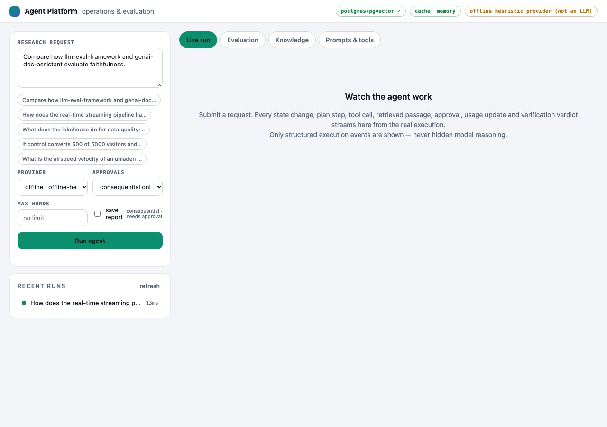

CASE STUDY / ALL SIX
Production AI Agent Platform
An observable research agent where every step is an event, every claim is checked, and consequential actions wait for a person.
- Commit tested
7acb147- Stack
- Python 3.12 · FastAPI · PostgreSQL 16 + pgvector · Redis (or in-memory) · SSE/WebSocket · MCP · pytest
01 / THE PROBLEM
Why it exists
Most agent demos hide what the agent did, cannot show where an answer came from, and let side effects happen without a gate. The goal was a small platform where a run is a state machine, each step is a persisted event, retrieved text is treated as untrusted data, answers are verified against evidence, and a person approves anything consequential.
02 / ARCHITECTURE
How it fits together
Choose a step to highlight the parts involved. Drawn from the project's own documentation; the list below the diagram carries the same information as text.
- deterministic code
- model / untrusted
- data store
- person
Allowed transitions are a table; illegal ones raise. Every transition is an event, which makes runs debuggable and testable.
The model proposes a structured plan. It is validated (tool names, no cycles); a bad plan falls back to a safe single-retrieval plan instead of failing the run.
Vector and full-text search run together and are merged by rank fusion; passages that look like injected instructions are flagged and withheld from the writer.
A separate verifier checks citations and claim support, repairs once, then strips what is unsupported.
Consequential tools suspend the step until a person approves; a timeout means deny.
Text version of the architecture
- A run is a state machine. Allowed transitions are a table; illegal ones raise. Every transition is an event, which makes runs debuggable and testable.
- Plan, then execute. The model proposes a structured plan. It is validated (tool names, no cycles); a bad plan falls back to a safe single-retrieval plan instead of failing the run.
- Evidence is retrieved, not recalled. Vector and full-text search run together and are merged by rank fusion; passages that look like injected instructions are flagged and withheld from the writer.
- Claims are verified. A separate verifier checks citations and claim support, repairs once, then strips what is unsupported.
- People approve consequences. Consequential tools suspend the step until a person approves; a timeout means deny.
03 / IMPLEMENTATION
What was built
- Run engine with an explicit transition table, per-run event sequence persisted before it is published, so streams replay losslessly after a reconnect.
- Structured outputs validated with Pydantic; one repair round-trip with the validation error; otherwise a safe fallback.
- Hybrid retrieval on one Postgres: pgvector HNSW and tsvector GIN, merged with reciprocal-rank fusion, plus a light coverage re-rank.
- Tool registry with built-in tools and tools imported from external MCP servers; argument validation before execution; per-call timeout and retry.
- Provider pool with a fallback chain; an offline deterministic provider makes the whole platform testable without a model.
04 / ENGINEERING DECISIONS
Choices and trade-offs
- Explicit state machine over a free-form agent loop. Resumable in principle, debuggable, testable, with clear failure classes. Cost: less flexible than a freeform loop.
- Postgres for everything stateful, including vectors. One system to back up and reason about, with transactions across documents and chunks. Trade-off: a dedicated vector store would scale further.
- Verification separate from generation, and again from evaluation. The online verifier and the offline evaluator are written independently so they do not share a blind spot.
- Approvals are part of execution. Consequential tools suspend the step; decisions travel over pub/sub so any API replica can answer.
- Retrieved text is untrusted. Injection patterns are flagged and withheld. The repository says plainly this is a mitigation, not a proof.
05 / VERIFICATION
What I actually ran
Run on 2026-11-01 in clean scratch environments. Offline tests on synthetic or bundled data show the code behaves as tested; they do not show production readiness.
| pytest, Python 3.12, embedded Postgres + pgvector | 78 passed |
|---|---|
| scripts/smoke.py against the running server | smoke OK: run completed in 13 ms, 3 cited claims, 10 docs, groundedness 1.0 |

06 / RUN IT
Run it yourself
Copied from the project's own documentation (README.md, section "Run it", at commit 7acb147 (the smoke command is listed there in the Docker path)). No Docker, API key or paid service is needed for the first three lines. Results are only those in the verification table above; running these on your machine may differ.
python3.12 -m venv .venv && . .venv/bin/activate
pip install -e ".[dev]"
python scripts/dev_server.py # indexes ./corpus, serves API + UI on http://127.0.0.1:8000
python scripts/smoke.py http://localhost:800007 / LIMITATIONS
What this does not show
- The default provider is a deterministic, extractive heuristic, not a language model (the badge in the screenshot says so). Groundedness is high by construction and consistency is 1.0 because it is deterministic.
- The evaluation dataset is a development set from the same author.
- One process; the split into workers, tenant isolation and OpenTelemetry export are described as next steps, not built.
- No hosted deployment is shown.
08 / BUSINESS RELEVANCE
Where it matters
Operations teams need researched answers with sources and a gate before anything is saved or sent: supplier or policy research, report drafting, exception analysis. The pattern (events, verification, approvals) is what makes such a tool auditable.